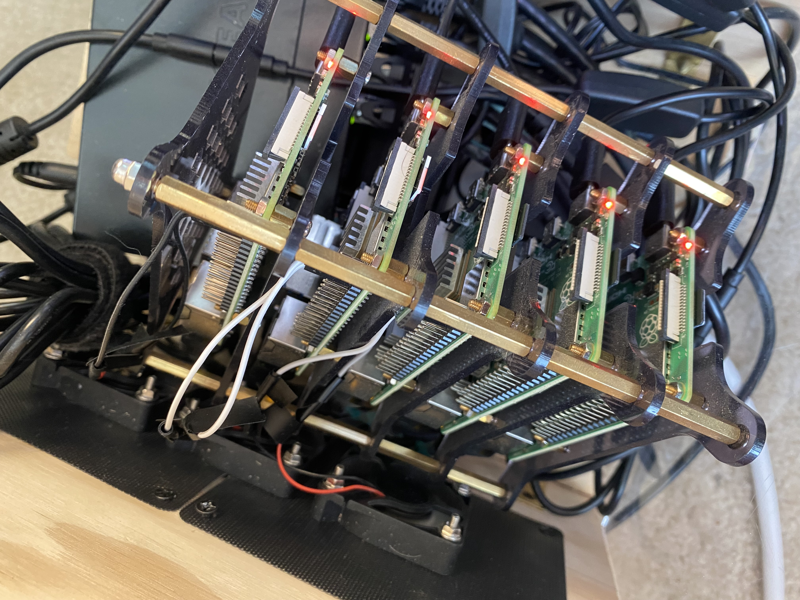

- Introduction (this post)
- Part I: My home network topology
- Part II: The Mastodon Helm chart
- Part III: Configuring and installing prerequisites
- Part IV: The waking nightmare that is Let’s Encrypt
- Part V: Actually installing Mastodon
- Conclusions
As I mentioned in my previous post, I spent the last month of last year spinning up my own Mastodon instance (which you can check out!) I’ve had a Raspberry Pi cluster of 5x Pi 4B modules sitting around for the better part of the last two years1. I’ve occasionally toyed with installing k3s and experimenting with various bits and pieces of kubernetes, but never actually deployed something I found useful.

Don’t get me wrong–I do want to go over how I installed and configured k3s on my Raspberry Pi cluster. It’s remarkable how quickly this area of things moves, and the guides I was working off for this were all 2-3 years old, and remarkably outdated. So a more recent tutorial on that basic component would definitely have its niche, I think.
But first, I want to kick off a series of posts detailing how I got a Mastodon instance running! It took a surprising amount of wrangling, so I wanted to share my experience before I forget the tiny details.
Why would you be interested in this series? Aside from the usual rough-and-tumble of installing anything on kubernetes via helm, the two parts that took the greatest amount of time and effort were 1) getting the Mastodon dependencies to work, and 2) wrestling Let’s Encrypt into submission. That first point is interesting because while Mastodon itself works just fine on ARM, the default images included in the Mastodon helm chart for the dependencies do NOT, and so it won’t work out-of-the-box on a Raspberry Pi cluster. And the second point was just plain rage-inducing, and I’d love for folks to not have to experience that.
I’ll fill in the links as I write the posts, so that you can bookmark this page if you’d like, though I’ll make sure to include the links on the other posts as well as I write them. In the meantime, don’t hesitate to drop any pointers / corrections / questions!
Footnotes
Yes, I did indeed purchase them two years ago. Would’ve been nigh impossible to get them at any time in between 😬↩︎